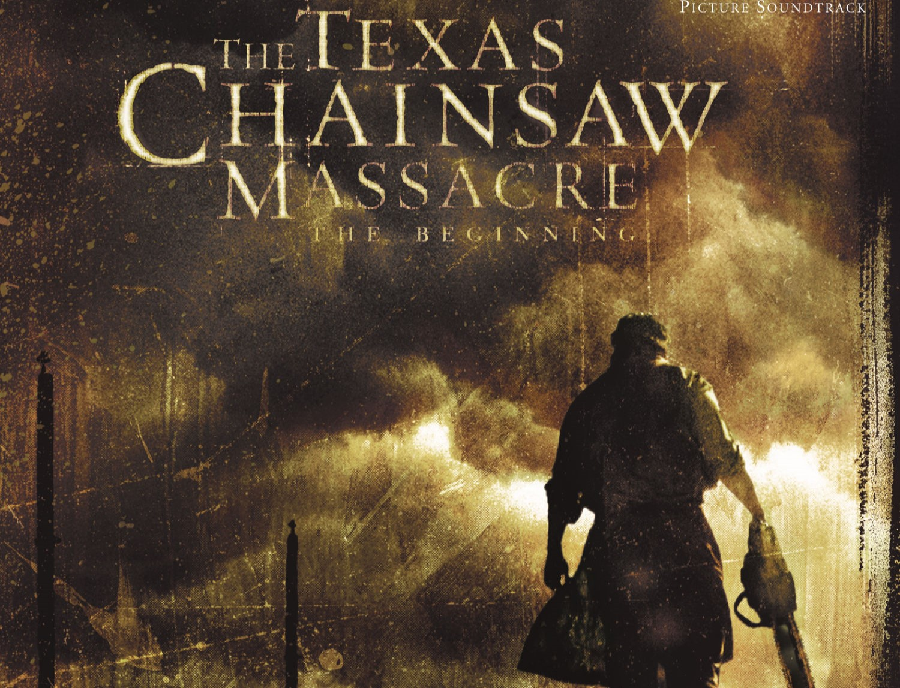
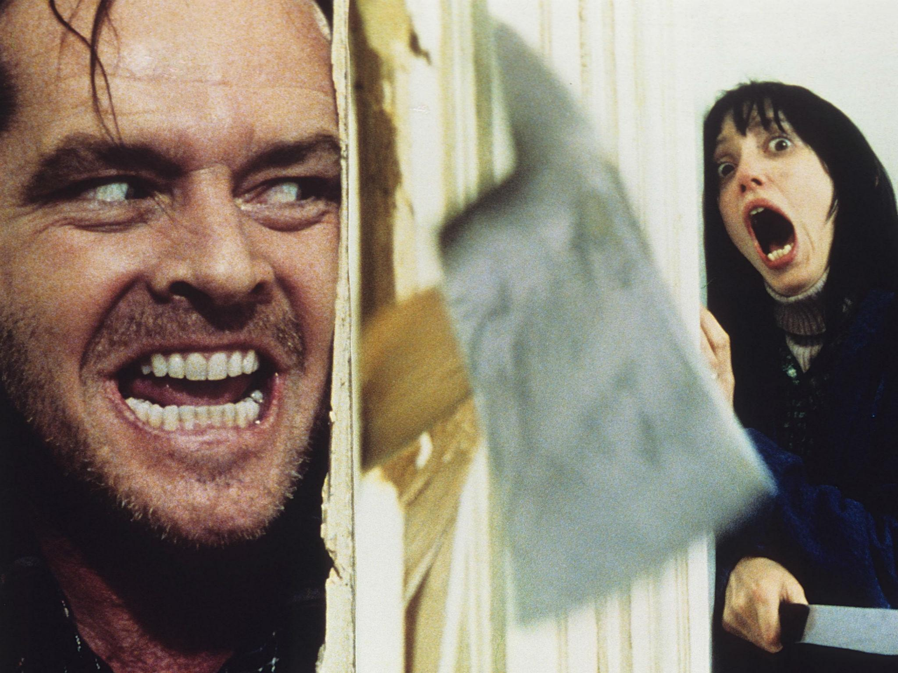
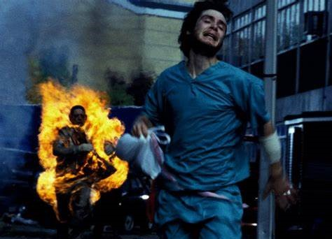
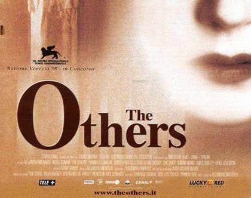

| The Warren Files |
The Warren File was released in 2013 and has already become one of the essential films on the list
of any horror fan. It is based on the true story of renowned investigators of paranormal events, Ed
and Lorraine Warren, who respond to the distress call of a family that lives in terror of an evil
being. |
|
| The Exorcist |
If you have to choose a horror movie classic par excellence, that is without a doubt The Exorcist .
It is an adaptation of the novel by William Peter Blatty inspired by a real exorcism in the fifties,
in Washington, of Regan, a twelve-year-old girl. And you, haven't you seen it yet? |
|
| The Texas Chainsaw Massacre |
Almost 50 years after its release, The Texas Chainsaw Massacre continues to be one of the favorite
horror movies for lovers of this cinema. And it is that, although today it impacts much less than in
its time, according to Eude, "its director marked a before and after in the genre at that time".
|
 |
| Martyrs |
In Eude's own words: " Mártires is very strange: it looks like it's going to be a normal kidnapping
movie... but no. It's very heavy and not everyone can see it. It's a very raw movie and perhaps the
one that can surprise the most to an analyst. It is a little-known film but "essential" according to
Eude, especially if you are a lover of horror movies. For the freestyler, what surprises the most
are "his plot twists" because "it surprises you more and more." |
|
| Hereditary |
Perhaps Hereditary is one of the most controversial films of recent years, since, as Eude says, it
is a "very uncomfortable" film. However, he himself admits that, "for better or worse, the movies
that make you feel things are the best." |
|
| The Shining |
The Shining is a true classic and the story behind the film is chilling. Its leading actress,
Shelley Duvall, was traumatized after filming; the daily stress and the continuous demands of the
director led to panic attacks, hair loss and subsequent depression. Even the writer of the novel on
which it is based, Steven King, did not like the film. However, today it is another essential. |
 |
| The Invisible Man |
"Brutal" is the word Eude uses to describe The Invisible Man . "This movie is very cool because it
doesn't talk so much about the invisible man as a monster, but about the relationship between two
people. It has a very strong social background and that makes it very interesting," explains the
freestyler. |
|
| The Blair Witch Project |
The Blair Witch project marked another turning point in horror cinema for its narrative in
mockumentary format. The marketing strategy that involved the film left a cinematographic lesson for
history, since it broke down the barriers between reality and fiction. And it is that the film
itself, supposedly, was a true story, since the production company even created a blog where it
announced that they had found some tapes of some disappeared boys who went to record a documentary
of an urban legend about a witch... and to To know the rest, you'll have to watch the movi |
|
| Let Me Out |
For Eude, Let Me Out is essential because of how "different" it is, because the plot catches you
like never before, and even more so after the narrative twists that reveal the story. The film won
an Oscar in 2017 for Best Original Screenplay and its importance is crucial, since it is only the
sixth horror film nominated for the most prestigious statuette in the industry in all of history.
|
|
| 28 Days Later |
In Eude's own words: " 28 days later is wonderful, its director is one of my favorites in Europe. He
even blew up a gas station to give the environment more realism and left London without warning to
record in an environment as close to an apocalypse" . If you like movies about viruses and
infections, this is your ideal movie. |
 |
| The Others |
The Others by Alejandro Amenábar is a milestone in Spanish cinema. It had 15 Goya nominations, of
which it won nothing more and nothing less than 8. Best Sound, Best Cinematography, Best Direction
and Best Film are some of the categories it won and today it is fourth on the list of films most
awarded at the Goya. |
 |
| At the Bottom of the Stairs |
"Since I was very little, I've held the movie At the Bottom of the Stairs very much in my mind
because to me it's the quintessential psychological horror movie," says Eude. "A first class haunted
house thriller" according to critics and one of the films that you should see yes or yes, because
according to the freestyler, "it is a masterpiece". |
|
| The Ring |
The American version of Gore Verbinski's The Ring is the remake of its original Japanese version.
This film cannot directly describe the trauma that it has always caused its viewers, since Samara
is, according to lovers of this type of film, the most terrifying girl in cinema. |
|
| Infernal Possession |
Eude defines Infernal Possession as "suffocating". For the rapper, it is one of the few films that
"scars real". He himself tells an anecdote that he even regretted buying this film in physical
format, because it is too terrifying. Surely you have ever seen the viral scene of the devilish girl
peeking out of her attic, and if not, you have to see it to know what true fear is. |
|